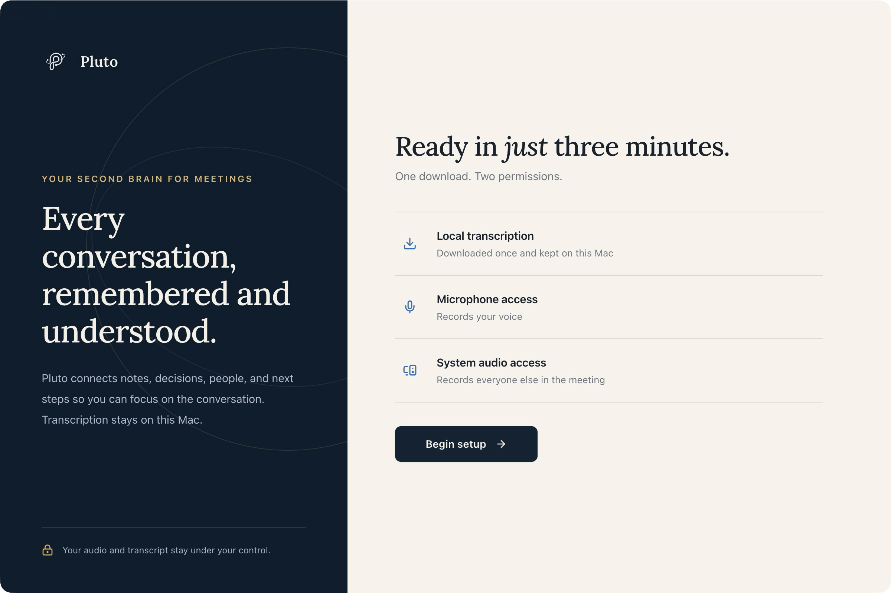

Before you begin
You’ll need an Apple Silicon Mac (M1 or later) running macOS 14.2 or later, plus an internet connection for the initial downloads.
Leave enough free disk space for the models and memory for Pluto alongside your other apps. Model size and conversation length affect how much memory you need.
Pluto downloads its own speech models for transcription. Ollama runs the separate language models that generate notes and answers. You’ll set up both below; no cloud API key is needed for this local setup.
Install Pluto with one command
Open Terminal from Applications → Utilities. Paste the command below and press Return. The installer downloads the newest release, verifies it, installs Pluto into Applications, and opens it.
curl -fsSL https://raw.githubusercontent.com/metagrover/pluto/master/scripts/install-macos.sh | bashThe public command requires the Pluto repository and releases to be public. Until then, private testers with GitHub CLI signed in and repository access can use:
gh api -H 'Accept: application/vnd.github.raw+json' repos/metagrover/pluto/contents/scripts/install-macos.sh | bashRunning the installer trusts Pluto and removes only its download quarantine, avoiding the manual Open Anyway step. It does not disable macOS protections for other apps or grant microphone, system audio, or calendar access. Read the installer.
Quit Pluto before upgrading. Your existing profile and downloaded speech models are preserved. Ad-hoc signed updates may ask for Pluto permissions again.
The command installs Pluto. For local notes and answers, install Ollama and download its models in the steps below.
Prefer to download the package yourself?
Download the Apple Silicon DMG from GitHub Releases, open it, and drag Pluto into Applications. If macOS blocks Pluto, use System Settings → Privacy & Security → Open Anyway. The current release is ad-hoc signed and is not notarized.
Prepare Pluto

- Open Pluto from Applications. For a new profile, choose Standard or Encrypted database setup. Encrypted setup uses macOS Keychain and may ask for permission. This choice is fixed for the profile.
- Follow Pluto’s setup screen to download and verify the transcription models. Wait for setup to finish before recording.
- Allow Microphone and System Audio Recording access when prompted. Calendar access is optional.
Review permissions in System Settings → Privacy & Security. Depending on macOS, system audio access may appear under Screen & System Audio Recording. Return to Pluto and choose Check again if a permission still appears missing. If microphone access was previously denied and you enable it in System Settings, macOS requires restarting Pluto.
Encrypted setup covers the database. Recording files are not encrypted by default. Read about privacy in Pluto.
Install Ollama
Download Ollama for Mac, move it into Applications, and open it. Complete its setup, including the prompt to make the ollama command available in Terminal.
Keep Ollama running while using Pluto. Local models run on your Mac; you don’t need to select an Ollama cloud model for this guide.
For installation details, see Ollama’s macOS instructions.
Download your models
Open Terminal from Applications → Utilities. Paste this command and press Return. It downloads the analysis model first, then the chat model. Keep Ollama open and wait for both downloads to finish.
ollama pull gemma4:12b && ollama pull phi4-mini:3.8bThese are Pluto’s current defaults: Gemma 4 12B for deeper analysis and Phi-4 Mini for fast chat. Downloads can take several minutes.
Check that both models are installed:
ollama listYou should see gemma4:12b and phi4-mini:3.8b in the list. If your Mac has limited memory, choose a smaller local model from Ollama’s library and use its exact name in Pluto.
Connect them in Pluto
Open Settings → Intelligence and select Ollama as your provider. Enter the installed model names in these fields:
- Local Analysis & Deep Model
gemma4:12b
Meeting preparation and deeper cross-meeting analysis.- Fast Chat Model
phi4-mini:3.8b
Quick Ask Pluto answers.
The names must match ollama list. If you downloaded different models, enter those names instead.
With a local Ollama service and downloaded models, notes and answers can be generated on your Mac. Initial downloads and updates still need internet access. Connecting a cloud provider or the optional ChatGPT plugin introduces a separate sharing boundary.
Try a short recording
- Keep Ollama open and start a short recording in Pluto. Let everyone know you’re recording.
- Speak into your selected microphone and check the live transcript. For a call, check that incoming audio is captured too.
- Stop recording and wait for transcription and notes processing to finish.
- Review the transcript and notes, then ask Pluto a question about the conversation. Follow its source links to check the answer.
If you see the transcript, generated notes, and a source-grounded answer, your local setup is ready to use. Generated output can still be wrong; keep reviewing the evidence.
If you get stuck
Terminal says “command not found: ollama”
Open the Ollama app and finish its command-line setup. Then close and reopen Terminal and try ollama list again. See Ollama’s installation instructions if it still isn’t available.
Pluto can’t connect to Ollama
Open the Ollama app again and confirm Ollama is selected in Pluto’s Intelligence settings. If you use the command line without the app, run ollama serve in a separate Terminal window and leave it running. You don’t need to start a second service when the app is already running.
A model is missing, or responses are slow
Run ollama list and check the exact model names in Pluto. Retry the matching ollama pull command if a download did not finish. If your Mac struggles, close other memory-heavy apps or try a smaller installed model and update the corresponding field in Pluto.
There’s no audio or transcript
Finish Pluto’s transcription model setup, check the selected microphone, and review microphone and system audio permissions in macOS. Return to Pluto and choose Check again if a permission still appears missing. If microphone access was previously denied and you enable it in System Settings, macOS requires restarting Pluto. Ollama handles notes and answers; it doesn’t provide Pluto’s speech transcription.
For more on Ollama, visit its official getting-started documentation.